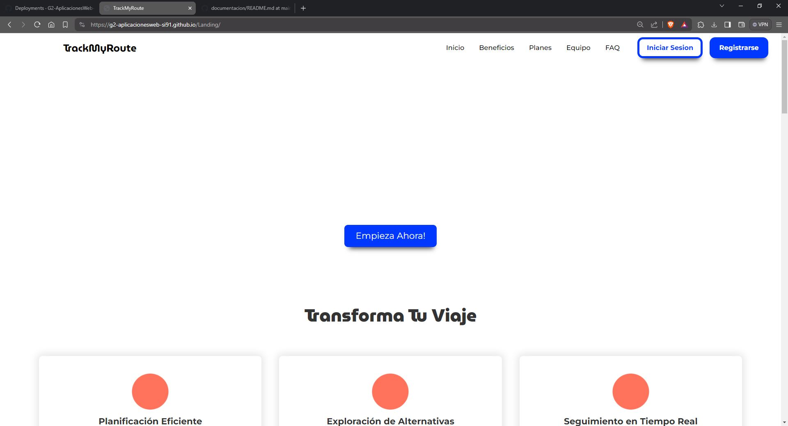
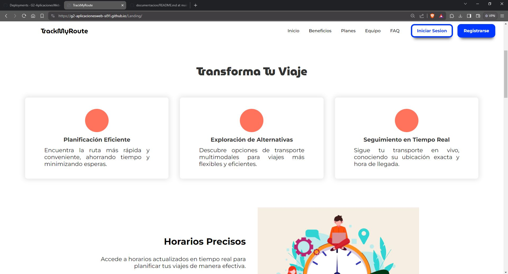
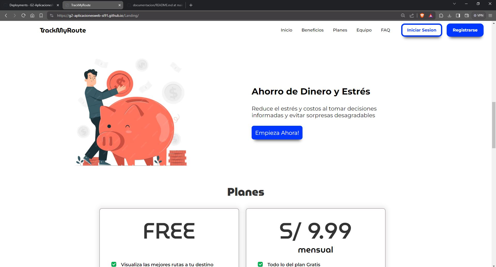
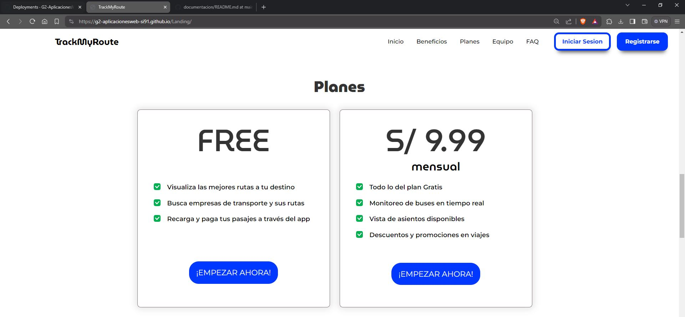
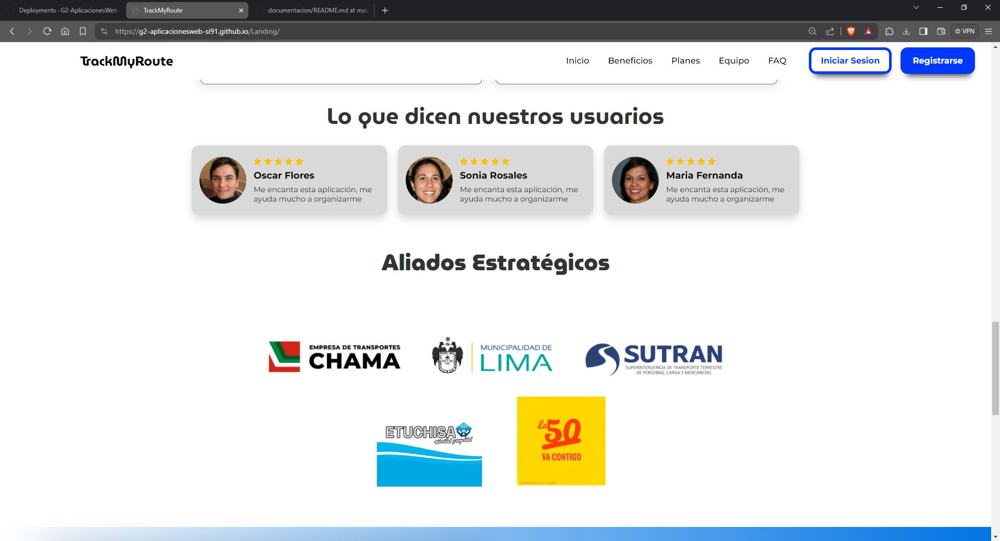
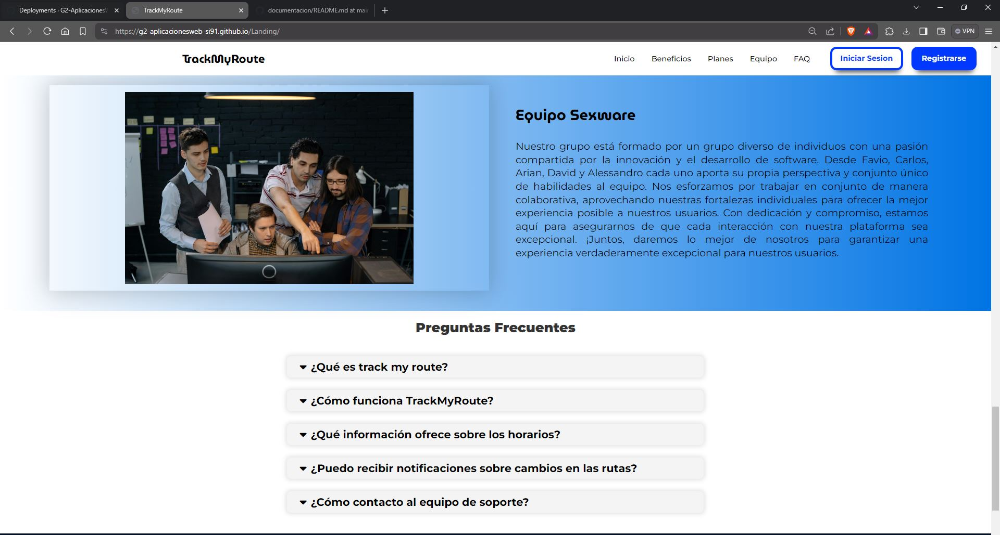

El objetivo de esta sección es resumir las modificaciones relevantes que se realizan al informe durante el ciclo de vida del proyecto. Esta sección inicia en una página nueva y se incluye un cuadro con la siguiente estructura:
| Versión | Fecha | Autor | Descripción de Modificación |
|---|---|---|---|
| v1.0 | 13/04/2024 | Todos | Añadimos los puntos que faltaban junto con el avance de la Landing Page |


Capítulo V: Product Implementation, Validation & Deployment
"TrackMyRoute" es una startup con la principal intención de transformar la forma en que las personas se desplazan por la ciudad utilizando el transporte público. Nuestra misión es simplificar y mejorar la movilidad urbana, ofreciendo a los residentes de Lima una aplicación integral que les permita encontrar las mejores rutas de transporte público para llegar a sus destinos de manera eficiente. Nuestra aplicación no solo brinda a los usuarios la capacidad de planificar sus viajes de manera óptima, sino que también proporciona información en tiempo real sobre el estado de las rutas y la disponibilidad de los medios de transporte. Además, colaboramos estrechamente con las empresas de transporte público para que también puedan beneficiarse de esta plataforma, obteniendo una visión en tiempo real de sus clientes y mejorando la calidad de sus servicios.

|
Nombre y Apellido:
Favio Sebastián Landeo Simeón |
|
Carrera:
Ingeniería de Software |
|
|
Acerca de:
Tengo 20 años y actualmente estoy cursando el séptimo ciclo de la carrera de Ingeniería de Software. Estoy disponible para ayudar siempre a mis compañeros y además tiendo a generar buenas relaciones sociales con diferentes tipos de personas gracias a mi tolerancia y capacidad de trabajo en equipo. En mis tiempos libres me gusta escuchar música, jugar videojuegos y editar videos. |
|

|
Nombre y Apellido:
Carlos Oswaldo, Casimiro Fernández |
|
Carrera:
Ingeniería de Software |
|
|
Acerca de:
Tengo 20 años y soy estudiante de Ingeniería de Software de la Universidad Peruana de Ciencias Aplicadas. Me considero una persona proactiva, educada y sociable con los que me rodean. Además cuento con habilidades peculiares como la animación en 3d, edición de videos cinematográficos y conocimiento en lenguajes como c + +, Python. |
|

|
Nombre y Apellido:
Carlos Arian Ramirez Mendoza |
|
Carrera:
Ingeniería de Software |
|
|
Acerca de:
Soy una persona muy interesada en la tecnología, programación y videojuegos, me gusta trabajar en equipo, planificar e idear proyectos y soluciones para problemáticas de la vida real. Me apasiona el mundo de las start-ups y cómo estas pueden lograr impactar en la vida de varias personas resolviendo sus necesidades. Me comprometo a dar ideas innovadoras y dar distintos puntos de vista a la hora de realizar un trabajo. |
|

|
Nombre y Apellido:
David Alejandro Rivas Sarango |
|
Carrera:
Ingeniería de Software |
|
|
Acerca de:
Actualmente estoy cursando la carrera de Ingeniería de Software en la UPC. Soy una persona honesta y responsable. Me interesa el área de Data Science, por esto estoy siguiendo cursos de capacitacion en SQL y Python. |
|

|
Nombre y Apellido:
Alessandro Stefano, Valenzuela Vallejos |
|
Carrera:
Ingeniería de Software |
|
|
Acerca de:
Soy Alessandro Valenzuela alumno de la carrera de Ingenieria de software entre mis principales atributos soy una persona dedicada, perseverante y muy competitiva, me gusta relacionarme para crear un buen ambiente de trabajo para mí y mis compañeros. Tengo conocimiento en lenguajes de programación como c + + y en el desarrollo de bases de datos. Poseo buenas capacidades para solucionar distintos problemas para el desarrollo de un trabajo. |
En esta sección iniciaremos por un análisis de los antecedentes y problemática sobre la movilización en transporte público para identificar las raíces del problema e identificar algunas necesidades que se deban cubrir para llegar a una solución de la problemática. Asimismo, luego pasaremos por el proceso UX para poder analizar más a detalle la problemática y poder plantear una hipótesis acerca de la problemática.
La movilización en transportes públicos en Lima, se ha visto influenciada por una serie de antecedentes y problemáticas a lo largo de su historia. En un contexto de rápido crecimiento poblacional y urbano, la demanda de servicios de transporte público ha ido en constante aumento. Sin embargo, varios factores han contribuido a desafiar la eficiencia y la calidad de la movilización en la ciudad. Históricamente, Lima contaba con sistemas de transporte público, como los tranvías, en el siglo XIX. Sin embargo, la falta de inversión y una planificación inadecuada llevaron al declive y eventual desaparición de estos sistemas en la segunda mitad del siglo XX. Entre las problemáticas más apremiantes se destaca la congestión del tráfico, que afecta de manera significativa a los limeños. El aumento de vehículos particulares y la infraestructura inadecuada han resultado en largos tiempos de viaje y congestión constante en las calles de la ciudad. Asimismo, el transporte público en Lima ha enfrentado dificultades, desde deficiencias en infraestructura y falta de mantenimiento hasta servicios ineficientes. Los usuarios a menudo se ven obligados a utilizar autobuses y combis en condiciones precarias, lo que afecta negativamente su experiencia de viaje. La seguridad en el transporte público también ha sido motivo de preocupación, con incidentes de robos y acoso a los pasajeros. Esto ha generado inquietudes sobre la seguridad de los usuarios en el sistema. Además, las tarifas de transporte público pueden resultar onerosas para personas de bajos ingresos, y la falta de accesibilidad adecuada para personas con discapacidad ha sido una preocupación persistente. A pesar de estos desafíos, el gobierno y las autoridades locales han implementado medidas para mejorar el transporte público en Lima, incluyendo la introducción de sistemas de transporte masivo como el Metropolitano y el Tren Eléctrico, así como esfuerzos para combatir la informalidad y elevar la calidad del servicio. Sin embargo, los retos siguen siendo considerables en una ciudad en constante crecimiento y transformación.
¿Qué?: La movilización en transportes públicos en Lima se refiere al desplazamiento de personas dentro de la ciudad utilizando medios de transporte público, como autobuses, combis, el Metropolitano (un sistema de buses de tránsito rápido) y el Tren Eléctrico. Esto incluye viajes diarios para trabajar, estudiar y realizar actividades cotidianas.
¿Quién?: Los usuarios del transporte público en Lima, que incluyen a residentes locales y visitantes de la ciudad, son los principales actores de esta movilización. Además, las autoridades gubernamentales y las empresas de transporte público desempeñan un papel importante en la gestión y regulación de estos servicios.
¿Por qué?: Las personas utilizan el transporte público en Lima por varias razones, incluyendo la congestión del tráfico, la falta de estacionamiento, la necesidad de una opción de movilidad asequible y la preocupación por el medio ambiente. Además, muchas personas no tienen acceso a un automóvil personal y dependen del transporte público para sus desplazamientos diarios.
¿Dónde?: Esta movilización se lleva a cabo en toda la ciudad de Lima, que incluye el centro histórico, los distritos periféricos y las áreas metropolitanas circundantes. Los usuarios se desplazan tanto dentro de la ciudad como hacia y desde los suburbios.
¿Cuándo?: La movilización en transportes públicos en Lima ocurre todos los días, durante todas las horas del día, ya que es esencial para las actividades diarias de la población. Los horarios varían según la ruta y el tipo de transporte.
¿Cómo?: Los usuarios pueden acceder al transporte público en Lima a través de una red de paraderos y estaciones que sirven a diferentes rutas y servicios. Los sistemas de transporte masivo, como el Metropolitano y el Tren Eléctrico, ofrecen tarjetas de acceso y estaciones específicas para abordar. Los autobuses y combis tienen paraderos designados en las calles
¿Cuánto?: El costo de utilizar el transporte público en Lima varía según el tipo de servicio y la distancia recorrida. Los precios de los boletos pueden oscilar desde unos pocos centavos hasta varios soles peruanos, dependiendo de la ruta y el sistema de transporte. Los usuarios a menudo pueden optar por tarifas con descuento si utilizan tarjetas de prepago o si son estudiantes o adultos mayores.
Conclusiones de las 5W y 2H: En conclusión, la movilización en transportes públicos en Lima, Perú, es una parte fundamental de la vida cotidiana de sus residentes y visitantes. Este sistema de transporte es utilizado por una amplia variedad de personas que dependen de él para desplazarse por la ciudad debido a la congestión del tráfico, la falta de estacionamiento y la necesidad de opciones de movilidad asequibles. A pesar de las numerosas problemáticas, como la congestión, la seguridad y la falta de inversión en infraestructura, el transporte público sigue siendo esencial para mantener la movilidad en una ciudad en constante crecimiento y transformación. Los esfuerzos de las autoridades locales y gubernamentales, como la implementación de sistemas de transporte masivo y la regulación del sector, son pasos importantes hacia la mejora de la movilización en Lima.
El propósito de TrackMyRoute es ayudar a las personas a planificar y realizar viajes en transporte público de manera fácil y eficiente. Además, de reducir los costos de transporte y la congestión de tráfico. Esto contribuye a mejorar la calidad del aire para reducir el impacto ambiental de los desplazamientos diarios.
User Assumptions
I. ¿Quién es el usuario? TrackMyRoute está dirigido a cualquier persona que utilice el transporte público en la ciudad de Lima. Esto puede incluir a estudiantes, trabajadores, viajeros y cualquier otra persona que necesite planificar un viaje en transporte público. Además es útil para turistas y visitantes que no están familiarizados con el sistema de transporte público local y que necesitan ayuda para planificar sus viajes.
II. ¿Dónde encaja nuestro producto en su trabajo o vida?
Nuestro servicio encaja para los residentes de Lima, que dependen en gran medida del transporte público para sus desplazamientos diarios, "TrackMyRoute" puede ser una herramienta esencial. Les permite encontrar la mejor ruta de transporte público para llegar a su destino de manera eficiente, ahorrando tiempo y minimizando la incertidumbre en sus viajes. Esto se traduce en una mayor comodidad y productividad en su vida cotidiana.
III. ¿Qué problemas tiene nuestro producto? ¿Evitar?
La precisión de la información en tiempo real es fundamental para la efectividad de la aplicación. Los datos incorrectos pueden llevar a los usuarios por rutas equivocadas y generar frustración. Además, al recopilar datos de ubicación en tiempo real, es crucial garantizar la privacidad y seguridad de los usuarios. Es por ello que debemos evitar problemas de seguridad, como la exposición de datos sensibles o la posibilidad de rastreo no autorizado.
IV. ¿Cuándo y cómo es nuestro producto? ¿Usado?
Nuestro servicio podrá ser utilizado a través de dispositivos móviles, como teléfonos inteligentes o tabletas. Los usuarios pueden descargar la aplicación desde tiendas de aplicaciones móviles, como la App Store o Google Play, e instalarla en sus dispositivos. Luego, ingresan su ubicación actual y destino, y la aplicación proporciona información sobre las rutas disponibles, tiempos de viaje estimados y actualizaciones en tiempo real sobre la ubicación de los vehículos de transporte público. Esto permite a los usuarios tomar decisiones informadas sobre la mejor manera de llegar a su destino utilizando el transporte público en Lima.
V. ¿Qué características son importantes?
“TrackMyRoute" es una aplicación esencial para los usuarios de transporte público en Lima, ofreciendo una amplia gama de características cruciales, como la búsqueda de rutas, información en tiempo real sobre el transporte, notificaciones y alertas, mapas interactivos, detalles de tarifas y opciones de pago, comentarios de usuarios, historial de viajes, accesibilidad y medidas de seguridad, todo ello respaldado por una colaboración efectiva con las empresas de transporte. Esta aplicación mejora la experiencia de viaje al ayudar a los usuarios a planificar y seguir sus rutas de manera eficiente, brindando un servicio completo y personalizado que facilita la movilidad en la ciudad de Lima.
VI. ¿Cómo debe verse nuestro producto y cómo comportarse?
Nuestra plataforma tiene que interactuar con los usuarios mediante un diseño llamativo e intuitivo con la finalidad de que nuestros usuarios confíen en nosotros y tengan facilidad de lograr sus objetivos al usar la plataforma.
Business Assumptions
Demanda de Usuarios: Suponemos que existe una demanda significativa de una aplicación de planificación de rutas de transporte público en Lima, ya que muchas personas utilizan el transporte público en la ciudad y buscan formas de optimizar sus viajes.
Colaboración con Empresas de Transporte: Suponemos que las empresas de transporte público en Lima estarán dispuestas a colaborar y proporcionar datos actualizados sobre sus rutas y vehículos para integrarlos en nuestra aplicación.
Disponibilidad de Datos en Tiempo Real: Suponemos que podemos acceder a datos en tiempo real de los sistemas de transporte público, lo que nos permitirá proporcionar información precisa sobre la ubicación y el estado de los vehículos.
Aceptación de Tecnología: Suponemos que la población de Lima está dispuesta a adoptar y utilizar aplicaciones móviles para planificar sus viajes en transporte público, y que cuentan con los dispositivos y la conectividad necesarios.
Monetización: Suponemos que podemos generar ingresos a través de modelos de monetización como la publicidad en la aplicación, la venta de boletos de transporte o la suscripción premium para características adicionales.
Seguridad de Datos: Suponemos que podemos garantizar la seguridad y privacidad de los datos personales de los usuarios, lo que fomentará la confianza en nuestra aplicación.
Competencia: Suponemos que habrá competidores en el mercado de aplicaciones de transporte público en Lima, y debemos encontrar formas de diferenciarnos y ofrecer un valor único a los usuarios.
Retención de Usuarios: Suponemos que podemos mantener una base de usuarios activa y comprometida a largo plazo mediante actualizaciones regulares de la aplicación, características adicionales y un excelente servicio al cliente.
Regulaciones y Cumplimiento Normativo: Suponemos que podemos cumplir con todas las regulaciones y requisitos legales relacionados con la operación de una aplicación de transporte público en Lima.
Marketing efectivo: Suponemos que podemos llevar a cabo estrategias de marketing efectivas para aumentar la conciencia y la adopción de la aplicación entre los residentes y visitantes de Lima.
Creemos que existe una demanda insatisfecha de una aplicación de planificación de rutas de transporte público en Lima. Realizaremos encuestas y análisis de mercado para evaluar el interés y la disposición de los usuarios para utilizar la aplicación. Suponemos que las empresas de transporte público estarán dispuestas a colaborar y proporcionar datos esenciales para nuestra aplicación. Iniciaremos conversaciones con empresas de transporte para determinar su interés y disposición para colaborar. Creemos que la población de Lima está dispuesta a utilizar aplicaciones móviles para planificar sus viajes en transporte público. Realizaremos encuestas de aceptación de tecnología y evaluaremos la adopción inicial de la aplicación. Suponemos que habrá competidores en el mercado de aplicaciones de transporte público y que podemos diferenciarnos. Realizaremos un análisis de la competencia y evaluaremos nuestra propuesta de valor única. Suponemos que podemos generar ingresos a través de modelos de monetización como la publicidad en la aplicación y la venta de boletos. Implementaremos estos modelos y evaluaremos la generación de ingresos y la aceptación de los usuarios.

Segmento objetivo 1: Pasajeros en busca de un autobús. (Pasajeros)
• Personas que viajan al trabajo o la escuela en transporte público. • Turistas que exploran Lima y prefieren utilizar el transporte público. • Personas que no tienen acceso a un vehículo personal y dependen del transporte público para sus desplazamientos diarios.
Segmento objetivo 2: Empresas de transporte que operan en Lima.
• Los gerentes de operaciones y logística de estas empresas. • Empresas formalizadas y con papeles en regla.
Moovit:
Moovit es una aplicación de movilidad urbana que proporciona a los usuarios información sobre rutas y horarios de transporte público en tiempo real. Permite a los usuarios planificar sus viajes utilizando una variedad de opciones de transporte público, incluidos autobuses, trenes, metro y tranvías. Moovit también ofrece alertas sobre interrupciones en el servicio y actualizaciones en tiempo real para ayudar a los usuarios a navegar por la ciudad de manera eficiente.

Citymapper:
Citymapper es una aplicación de planificación de viajes que ofrece rutas y horarios para una amplia gama de opciones de transporte en ciudades de todo el mundo. Además de proporcionar información sobre transporte público, Citymapper incluye opciones de transporte alternativo como bicicletas compartidas, scooters eléctricos y servicios de viaje compartido. La aplicación también ofrece detalles sobre tarifas, tiempo de viaje y opciones de rutas más rápidas o escénicas.
Trafi:
Trafi es una aplicación de movilidad urbana que ofrece información detallada sobre rutas y horarios de transporte público, así como opciones para otros modos de transporte, como bicicletas compartidas y servicios de viaje compartido. La aplicación utiliza datos en tiempo real para proporcionar a los usuarios actualizaciones sobre el estado del servicio, retrasos y cambios en las rutas. Trafi está disponible en varias ciudades de todo el mundo y se centra en ofrecer soluciones de movilidad integrales para sus usuarios.

| Competitive Analysis Landscape | ||||||
|---|---|---|---|---|---|---|
| ¿Por qué llevar a cabo este análisis? | Escriba en el recuadro la pregunta que busca responder o el objetivo de este análisis. | |||||
| Este análisis se concretó teniendo como finalidad el poder identificar a nuestros potenciales competidores e idear estrategias y tácticas para diferenciarnos de ellos. | ||||||
| Nuestro Producto / Competidores | TrackMyRoute | Moovit | Citymapper | Trafi | ||
| Perfil | Overview | TrackMyRoute se destaca por su enfoque específico en mejorar la movilidad urbana en Lima, Perú. Ofrece una combinación de planificación de rutas, información en tiempo real sobre el estado del transporte público y la posibilidad de realizar pagos de pasajes dentro de la aplicación. Su colaboración con empresas de transporte público locales y la opción de una versión premium con funciones adicionales lo convierten en una opción atractiva para los residentes de Lima que buscan optimizar sus desplazamientos por la ciudad. | Moovit es una aplicación ampliamente reconocida a nivel mundial por su capacidad para proporcionar información detallada sobre rutas y horarios de transporte público en tiempo real. Con una amplia disponibilidad internacional, Moovit se destaca por su capacidad para ofrecer actualizaciones en tiempo real sobre el estado del servicio, alertas de servicio y una comunidad activa de usuarios que contribuyen con información valiosa sobre el transporte público en sus ciudades. | Citymapper es conocida por su enfoque integral en la planificación de viajes, ofreciendo opciones para una variedad de modos de transporte, incluidos el transporte público, bicicletas compartidas, scooters eléctricos y servicios de viaje compartido. Su diseño intuitivo y la capacidad de ofrecer opciones de rutas más rápidas o escénicas lo convierten en una opción popular entre los usuarios que buscan soluciones de movilidad flexibles y personalizadas en ciudades de todo el mundo. | Trafi ofrece una solución completa para la planificación de viajes en ciudades de todo el mundo, con información detallada sobre rutas y horarios de transporte público, así como opciones para otros modos de transporte como bicicletas compartidas y servicios de viaje compartido. Su enfoque en ofrecer soluciones de movilidad integrales y actualizaciones en tiempo real sobre el estado del servicio lo convierten en una herramienta valiosa para los usuarios que buscan optimizar sus desplazamientos urbanos. | |
| Ventaja competitiva | TrackMyRoute se destaca por su enfoque localizado en Lima, Perú, lo que permite una adaptación precisa a las necesidades del sistema de transporte público local. Además, su integración con las empresas de transporte público ofrece una experiencia más confiable y personalizada para los usuarios, brindando acceso a datos actualizados y recursos exclusivos. | Moovit sobresale por su amplia disponibilidad internacional, convirtiéndose en una opción confiable para usuarios que viajan entre diferentes ciudades y países. Además, sus actualizaciones en tiempo real sobre el estado del servicio y la participación activa de la comunidad de usuarios garantizan información precisa y confiable para optimizar los viajes en transporte público. | Citymapper ofrece una ventaja competitiva a través de su variedad de modos de transporte, que incluyen opciones como transporte público, bicicletas compartidas y servicios de viaje compartido. Su diseño intuitivo y las opciones de rutas personalizadas hacen que la planificación de viajes sea flexible y adaptada a las preferencias individuales de los usuarios. | Trafi destaca por ofrecer soluciones integrales de movilidad, proporcionando información detallada sobre una amplia variedad de modos de transporte. Sus actualizaciones en tiempo real sobre el estado del servicio permiten a los usuarios tomar decisiones informadas sobre sus desplazamientos, adaptándose a cualquier cambio en el transporte público de manera eficiente. | ||
| Perfil de Marketing | Mercado objetivo | El mercado objetivo principal para TrackMyRoute son los residentes de Lima, Perú, que dependen del transporte público para sus desplazamientos diarios. Esto incluye a estudiantes, trabajadores y cualquier persona que utilice el transporte público en la ciudad. Además, la aplicación también puede ser útil para turistas y visitantes que desean explorar Lima utilizando el transporte público. | Moovit tiene un mercado objetivo amplio y diverso que abarca usuarios de transporte público en ciudades de todo el mundo. Esto incluye a personas de todas las edades y grupos demográficos que utilizan el transporte público como parte de su rutina diaria, así como viajeros y turistas que buscan orientación sobre el transporte público en nuevas ubicaciones. | Citymapper se dirige a usuarios urbanos en ciudades de todo el mundo que buscan una solución integral para planificar sus viajes utilizando una variedad de modos de transporte. Esto incluye a personas jóvenes y activas que prefieren opciones de movilidad flexibles y personalizadas, así como a profesionales y trabajadores que necesitan optimizar sus desplazamientos diarios. | Trafi está dirigido a usuarios urbanos en ciudades de todo el mundo que buscan una solución completa para planificar y optimizar sus viajes utilizando diferentes modos de transporte. Su mercado objetivo incluye a personas de todas las edades y grupos demográficos que dependen del transporte público y están interesadas en recibir información actualizada y precisa sobre sus opciones de movilidad. | |
| Estrategias de marketing | Publicidad dirigida en redes sociales, enfocada en residentes de Lima y colaboración con empresas de transporte público para promoción mutua. | Publicidad en plataformas online y apps de viajes. Tambien programas de referidos para usuarios existentes. | Creación de contenido educativo en video. Colaboraciones con influencers locales. | Optimización SEO para mejorar visibilidad en búsquedas. Participación en eventos de movilidad urbana. | ||
| Perfil de Producto | Productos & Servicios | TrackMyRoute ofrece una aplicación móvil para la planificación de rutas de transporte público en Lima, con una versión premium que incluye características como pagos integrados y actualizaciones en tiempo real. Además, se colabora con empresas de transporte público para mejorar la calidad de los servicios y la experiencia del usuario. | Moovit proporciona una aplicación móvil para la planificación de rutas y horarios de transporte público a nivel global. Ofrece actualizaciones en tiempo real sobre el estado del servicio y alertas de servicio, junto con una comunidad activa de usuarios que contribuyen con información sobre el transporte público. | Citymapper ofrece una aplicación móvil para la planificación de viajes integrales en ciudades de todo el mundo. La aplicación proporciona rutas para una variedad de modos de transporte y opciones de rutas personalizadas, con un diseño intuitivo para mejorar la experiencia del usuario. | Trafi es una aplicación móvil que permite la planificación de viajes en ciudades globales. Ofrece información detallada sobre rutas y horarios de transporte público, así como opciones para otros modos de transporte. Además, proporciona actualizaciones en tiempo real sobre el estado del servicio y soluciones integrales de movilidad para usuarios urbanos. | |
| Precios & Costos | Ofrece una versión gratuita con opciones básicas y una versión premium con características adicionales que los usuarios pueden adquirir mediante una tarifa mensual o anual. Los ingresos provienen de la venta de la versión premium y los costos asociados incluyen desarrollo inicial, mantenimiento de servidores, actualizaciones de software y posibles costos de soporte técnico. | La aplicación es gratuita para los usuarios, generando ingresos principalmente a través de acuerdos de publicidad y posiblemente asociaciones con empresas de transporte público. Los costos incluyen el desarrollo continuo de la aplicación, mantenimiento de servidores y posibles costos de soporte técnico y marketing. | Es gratuita para los usuarios y probablemente genere ingresos a través de acuerdos de publicidad y posibles asociaciones con empresas de transporte. Los costos están asociados con el desarrollo y mantenimiento continuo de la aplicación, así como los gastos de servidores y posibles costos de marketing. | Igualmente gratuita para los usuarios, Trafi podría generar ingresos a través de acuerdos de publicidad y posiblemente asociaciones con empresas de transporte. Los costos incluyen el desarrollo y mantenimiento de la aplicación, así como los gastos de servidores y posibles costos de marketing y soporte técnico. | ||
| Canales de distribución (Web y/o Móvil) | La aplicación puede distribuirse a través de su propio sitio web, donde los usuarios pueden acceder a información sobre la aplicación y descargarla desde enlaces directos a las tiendas de aplicaciones. | Moovit ofrece información sobre la aplicación y enlaces de descarga en su sitio web oficial, permitiendo a los usuarios acceder y descargar la aplicación desde sus navegadores web. | Citymapper proporciona información sobre la aplicación y enlaces de descarga en su sitio web oficial, permitiendo a los usuarios acceder y descargar la aplicación desde sus navegadores web. | Trafi ofrece información sobre la aplicación y enlaces de descarga en su sitio web oficial, permitiendo a los usuarios acceder y descargar la aplicación desde sus navegadores web. | ||
| Análisis SWOT | ||||||
| Fortalezas | Enfoque localizado en Lima, integración con empresas de transporte público, versión premium con funciones adicionales. | Amplia disponibilidad internacional, actualizaciones en tiempo real, comunidad activa de usuarios. | Variedad de modos de transporte, diseño intuitivo, opciones de rutas personalizadas. | Soluciones integrales de movilidad, actualizaciones en tiempo real, enfoque en la experiencia del usuario. | ||
| Debilidades | Dependencia del desarrollo del sistema de transporte público en Lima, competencia con aplicaciones establecidas. | Dependencia de la calidad de los datos de transporte público, competencia con otras aplicaciones similares. | Dependencia de la calidad de los datos de transporte, competencia con aplicaciones establecidas como Moovit. | Dependencia de la calidad de los datos de transporte público, competencia con aplicaciones más establecidas como Moovit y Citymapper. | ||
| Oportunidades | Crecimiento del mercado de aplicaciones de movilidad urbana en Lima, colaboración con más empresas de transporte público, expansión a otras ciudades. | Expansión a nuevos mercados, desarrollo de nuevas características y funcionalidades, colaboraciones con más empresas de transporte. | Expansión a nuevas ciudades, desarrollo de nuevas características innovadoras, colaboraciones con empresas de transporte y urbanismo. | Expansión a nuevos mercados globales, desarrollo de nuevas funciones para mejorar la experiencia del usuario, colaboraciones con empresas de transporte y gobierno. | ||
| Amenazas | Cambios en la infraestructura de transporte, entrada de competidores locales o globales. | Entrada de nuevos competidores, cambios en las políticas de datos de transporte público. | Cambios en la infraestructura de transporte, entrada de nuevos competidores con características similares. | Cambios en las políticas de transporte, entrada de nuevos competidores con enfoques similares. | ||
Estrategia: TrackMyRoute se enfocará en resaltar las características únicas de la aplicación, como la integración con empresas de transporte público locales y la oferta de una versión premium con funciones exclusivas.
Tácticas: Para llevar a cabo esta estrategia, se implementarán campañas de marketing que destaquen estas características distintivas, utilizando mensajes claros y persuasivos para comunicar el valor añadido de la aplicación en comparación con los competidores.
Estrategia: La startup se comprometerá a mantenerse actualizada con las últimas tendencias y tecnologías en el mercado de movilidad urbana.
Tácticas: Para lograr esto, se planificarán actualizaciones frecuentes de la aplicación para mejorar la experiencia del usuario, se agregarán nuevas características basadas en comentarios de usuarios y análisis de competidores, y se buscarán colaboraciones con empresas de transporte público para integrar nuevas funcionalidades.
Estrategia: Se buscarán asociaciones con empresas de transporte público y otras organizaciones relacionadas con la movilidad urbana.
Tácticas: Para implementar esta estrategia, la startup identificará oportunidades para colaborar con empresas de transporte público en la mejora de la infraestructura de datos, ofrecerá promociones y descuentos exclusivos para los usuarios de la aplicación en colaboración con estas empresas, y participará activamente en eventos y conferencias de la industria para establecer conexiones con otras organizaciones del sector.
Estrategia: La prioridad será la satisfacción del usuario y la facilidad de uso de la aplicación.
Tácticas: Para llevar a cabo esta estrategia, se realizarán pruebas de usuario para identificar áreas de mejora en la experiencia del usuario, se ofrecerá soporte técnico receptivo y eficiente, y se proporcionarán recursos educativos y tutoriales para ayudar a los usuarios a aprovechar al máximo la aplicación.
Estrategia: La startup se comprometerá a monitorear de cerca las acciones y estrategias de los competidores.
Tácticas: Para ejecutar esta estrategia, se realizarán análisis periódicos de la competencia para identificar nuevas oportunidades y amenazas, se seguirán de cerca las actualizaciones y lanzamientos de productos de los competidores, y se ajustará la estrategia de la startup en función de los cambios en el mercado competitivo.
Nuestro objetivo es obtener información sobre las necesidades y los problemas de los usuarios de transporte público en Lima. Esta información se utilizará para mejorar el servicio de nuestra empresa. Nuestros participantes serán usuarios de transporte público en Lima. Se seleccionarán participantes con diferentes perfiles, como edad, género, lugar de residencia, y frecuencia de uso del transporte público. Las preguntas serán abiertas y no directivas para que los participantes puedan expresar sus opiniones libremente. A continuación, se presentan algunos ejemplos de preguntas:
Segmento 1: Usuarios Diarios de Transporte Público en Lima:
Segmento 2: Empresas de transporte en Lima:
Entrevista 01
Entrevista #1:

Nombre: Albre Cañamero, Jose
Enlace de entrevista:
https://upcedupe-my.sharepoint.com/![v]() /g/personal/u202214695_upc_edu_pe/EeS3yHZQ_xNArGNUtPUQuIQBAW61pI0n41otb6jIoq6hjQ?e=s4DVuo
Resumen de la entrevista:
El entrevistado, es un joven de 19 años que actualmente se encuentra estudiando la carrera de sociologia, el diaramente se moviliza por el transporte publico, debido a que le resulta mas económico movilizarse por ese medio. Nos comenta que la idea de nuestra le gusta mucho, porque el quisiera tener mas conocimiento sobre las mejores rutas que pueda tomar, quisiera que nosotros tengamos convenio con las empresas de los buses.
/g/personal/u202214695_upc_edu_pe/EeS3yHZQ_xNArGNUtPUQuIQBAW61pI0n41otb6jIoq6hjQ?e=s4DVuo
Resumen de la entrevista:
El entrevistado, es un joven de 19 años que actualmente se encuentra estudiando la carrera de sociologia, el diaramente se moviliza por el transporte publico, debido a que le resulta mas económico movilizarse por ese medio. Nos comenta que la idea de nuestra le gusta mucho, porque el quisiera tener mas conocimiento sobre las mejores rutas que pueda tomar, quisiera que nosotros tengamos convenio con las empresas de los buses.
Entrevista 02
Entrevistado 2:
Nombre y apellidos: Fabio Horna
Edad: 24 años
Ubicación: Lima
Evidencia de la reunión:

Inicio: 00:04
Fin: 02:57
Enlace de entrevista: https://upcedupe-my.sharepoint.com//g/personal/u202018894_upc_edu_pe/EddQn8WabOhChWfh2viP_c8BR0u5fm4qwyeLOcOZLOEE1g?e=uzQA3P&nav=eyJyZWZlcnJhbEluZm8iOnsicmVmZXJyYWxBcHAiOiJTdHJlYW1XZWJBcHAiLCJyZWZlcnJhbFZpZXciOiJTaGFyZURpYWxvZy1MaW5rIiwicmVmZXJyYWxBcHBQbGF0Zm9ybSI6IldlYiIsInJlZmVycmFsTW9kZSI6InZpZXcifX0%3D
Resumen de la entrevista: Nuestro entrevistado fue Fabio Horna, un joven de 24 años que trabaja en una empresa de transporte público, discutió varios aspectos de su rol como auditor y las operaciones de la empresa en Lima. Explicó los servicios de transporte que ofrece la empresa, identificando los desafíos actuales en operaciones y atención al cliente, como la eficiencia y la satisfacción del usuario. Además, mencionó que su empresa desea incorporar tecnología para mejorar la gestión de los servicios, y destacó las funcionalidades importantes que debería tener una aplicación para optimizar estos procesos. Fabio valoró características como la usabilidad y la integración de datos al seleccionar tecnología y expresó preocupaciones sobre la implementación efectiva de nuevas plataformas. También compartió experiencias previas con tecnologías similares en el sector del transporte público.
Entrevista 03
Nombre y apellidos: Alba Murillo
Edad: 24 años
Ubicación: Lima
Evidencia de la reunión:

Enlace de entrevista: https://upcedupe-my.sharepoint.com/personal/u202018894_upc_edu_pe/_layouts/15/stream.aspx?id=%2Fpersonal%2Fu202018894%5Fupc%5Fedu%5Fpe%2FDocuments%2FOpenSource%2FEntrevista02%20Segmento2%2Emp4&nav=eyJyZWZlcnJhbEluZm8iOnsicmVmZXJyYWxBcHAiOiJPbmVEcml2ZUZvckJ1c2luZXNzIiwicmVmZXJyYWxBcHBQbGF0Zm9ybSI6IldlYiIsInJlZmVycmFsTW9kZSI6InZpZXciLCJyZWZlcnJhbFZpZXciOiJNeUZpbGVzTGlua0NvcHkifX0&ga=1&referrer=StreamWebApp%2EWeb&referrerScenario=AddressBarCopied%2Eview
Resumen de la entrevista:
El análisis de la entrevista revela que los usuarios de transporte público en Lima valoran la puntualidad, la disponibilidad de información actualizada y la seguridad durante los viajes. Utilizan principalmente dispositivos móviles para acceder a aplicaciones y canales digitales, como Google Maps y Moovit, para planificar sus viajes. Esperan características como la visualización en tiempo real de los autobuses y notificaciones sobre cambios en el servicio, junto con una interfaz intuitiva y opciones de personalización. Su disposición a pagar por una versión premium depende de si ofrece mejoras significativas en la experiencia de viaje. En resumen, los usuarios buscan una aplicación confiable, precisa y fácil de usar que satisfaga sus necesidades de planificación de viajes en transporte público y mejore su experiencia general.
Análisis de las Entrevistas: Usuarios Regulares del Transporte Público en Lima
El análisis de la entrevista revela que los usuarios de transporte público en Lima valoran la puntualidad, la disponibilidad de información actualizada y la seguridad durante los viajes. Utilizan principalmente dispositivos móviles para acceder a aplicaciones y canales digitales, como Google Maps y Moovit, para planificar sus viajes. Esperan características como la visualización en tiempo real de los autobuses y notificaciones sobre cambios en el servicio, junto con una interfaz intuitiva y opciones de personalización. Su disposición a pagar por una versión premium depende de si ofrece mejoras significativas en la experiencia de viaje. En resumen, los usuarios buscan una aplicación confiable, precisa y fácil de usar que satisfaga sus necesidades de planificación de viajes en transporte público y mejore su experiencia general.
Análisis de las Entrevistas: Empresas de Transporte Público en Lima
Las empresas de transporte público en Lima expresaron la necesidad de una aplicación que les permita optimizar la gestión de sus flotas, coordinar horarios y mejorar la eficiencia operativa. Esperan una aplicación fácil de usar que proporcione información precisa y actualizada sobre las rutas de transporte público, los horarios y las ubicaciones de las paradas. Además, valorarían características adicionales como la capacidad de gestionar flotas de manera eficiente, la generación de informes de rendimiento y la integración con sistemas de pago electrónico. La fiabilidad y la consistencia en el funcionamiento de la aplicación son aspectos clave para estas empresas, quienes necesitan contar con una herramienta confiable para gestionar sus operaciones diarias. Están abiertas a colaborar estrechamente con los desarrolladores de la aplicación para adaptarla a sus necesidades específicas y garantizar una implementación exitosa en sus operaciones
Los User Personas son necesarios para la formación de este proyecto, ya que brindan una perspectiva completa de los usuarios clave. Estos perfiles detallados permiten a la startup diseñar una plataforma y experiencia enfocada y personalizada, abordando de manera efectiva los desafíos específicos de cada segmento objetivo:
User Persona del segmento: Usuarios Diarios de Transporte Público en Lima

User Persona del segmento: Empresas de transporte en Lima

En esta seccion, se describen las tareas típicas que realizan los dos segmentos objetivos. Se evalúa la frecuencia y la severidad de cada tarea de los user persona, lo que ayuda a priorizar y entender cuáles son las áreas clave en las que el producto podría influir.
Segmento Objetivo: Usuarios Diarios de Transporte Público en Lima
| Tarea | Frecuencia | Severidad |
|---|---|---|
| Planificar viajes diarios | Casi siempre | Alta |
| Obtener información sobre transporte público | Casi siempre | Alta |
| Minimizar tiempo de viaje | Casi siempre | Alta |
| Evitar retrasos en el transporte público | Casi siempre | Alta |
| Acceder a noticias locales | A veces | Media |
| Buscar eventos locales | A veces | Media |
| Acceder a descuentos locales | A veces | Media |
| Utilizar transporte público en horarios no laborales | Rara vez | Baja |
| Interactuar con la aplicación | Casi siempre | Alta |
Segmento Objetivo: Empresas de transporte en Lima
| Tareas | Frecuencia | Severidad |
|---|---|---|
| Registrar la empresa en la aplicación | Una vez | Alta |
| Configurar y personalizar la aplicación | Rara vez | Alta |
| Programar rutas y horarios de los vehículos | Casi Siempre | Alta |
| Supervisar el estado y la ubicación de los vehículos | Casi siempre | Alta |
| Comunicarse con los conductores en tiempo real | Casi siempre | Alta |
| Generar informes de rendimiento y eficiencia | Rara vez | Alta |
| Integrar la aplicación con sistemas de pago | Rara vez | Alta |
| Proporcionar retroalimentación sobre la aplicación | Rara vez | Media |
| Monitorear la satisfacción del cliente y gestionar quejas | Casi siempre | Media |
User Journey Mapping del segmento: Usuarios Diarios de Transporte Público en Lima

User Journey Mapping del segmento: Empresas de transporte en Lima


As-is Map del Usuario

As-is Map de la Empresa

Con la herramiento del To-be scenario mapping exploramos las mejoras y las nuevas funcionalidades que se incorporarán en la aplicación “TrackMyRoute”. Estas mejoras están diseñadas para optimizar la experiencia de los usuarios al movilizarse por la ciudad de Lima en transporte público y proporcionar a la empresa de transporte una visión en tiempo real de sus clientes. A través de este proceso, visualizamos cómo la aplicación evolucionará para brindar un servicio más eficiente y útil a los dos grupos de usuarios.

En la sección de User Stories, detallaremos las diversas necesidades y requerimientos de nuestros usuarios y la empresa de transporte. Cada historia de usuario representará un escenario o una función específica que se espera que la aplicación proporcione, con el objetivo de cumplir connuestro propósito principal: ayudar a las personas a navegar por la ciudad de Lima utilizando el transporte público de manera eficiente y brindar a la empresa de transporte información en tiempo real sobre sus clientes. A través de estas historias de usuario, podremos comprender mejor cómo la aplicación satisfará las necesidades de ambas partes y proporcionará una solución integral para la movilidad urbana.
| Epic / Story ID | Título | Descripción | Criterios de Aceptación | Relacionado con (Epic ID) |
|---|---|---|---|---|
| HU01 | Registrar al usuario | Como cliente quiero registrarme con todos mis datos pertinentes (nombre, correo, edad, etc.) en la aplicación para poder hacer uso de sus funcionalidades. | Escenario: El cliente se registra en la aplicación. Dado que el cliente se encuentra en la pantalla de inicio de sesión,Y el cliente quiere registrarse para usar la aplicación,Cuando el cliente rellena un formulario de creación de una cuenta nueva con todos sus datos personales pertinentes,Entonces el sistema guardará todos sus datos y le permitirá acceder a las funcionalidades de la aplicación. | HU02 |
| HU02 | Inicio de sesión en la aplicación | Como cliente quiero iniciar sesión en la aplicación con mis credenciales (correo y contraseña) para poder entrar a la aplicación con mi cuenta existente | Escenario: El cliente quiere iniciar sesión en la aplicación Dado que el cliente se encuentra en la pantalla de inicio de sesión,Y el usuario ya tiene una cuenta existente,Cuando el cliente rellena los campos de la pantalla de inicio de sesión con sus credenciales (correo y contraseña) correctamente,Entonces el cliente podrá acceder a las funcionalidades de la aplicación con su cuenta existente. | HU01 |
| HU03 | Eliminar cuenta o usuario | Como cliente quiero tener la posibilidad de borrar mi cuenta para que mis datos ya no permanezcan en la base de datos de la aplicación. | Escenario: El cliente quiere eliminar una cuenta o usuario Dado que el cliente se encuentra en la pantalla de ajustes de la cuenta,Y el cliente tiene la intención de borrar su cuenta,Cuando el cliente selecciona la opción de borrar su cuenta en la aplicación,Entonces la aplicación eliminará su cuenta y los datos personales del cliente de la base de datos. | HU01,HU02 |
| HU04 | Registro de rutas y buses | Como desarrollador quiero registrar a las rutas de transporte urbano y a los buses que transitan por estas para así tener un registro de todas las que se encuentren en Lima. | Escenario: el desarrollador quiere registrar las rutas de los buses. Dado que el desarrollador se encuentra en la pantalla de ingreso de datos en la base de datos,Y el desarrollador tiene a la mano los datos de las rutas y los buses,Cuando el desarrollador quiera insertar los datos pertinentes,Entonces la aplicación guardará en la base de datos todos los datos relacionados con las rutas y los buses | HU05, HU06 |
| HU05 | Registro de conductores | Como desarrollador quiero registrar a los conductores de los buses para así tener un registro de todos los conductores que transitan por las rutas por motivos de seguridad al usuario. | Escenario: El desarrollador quiere registrar a los conductores de los buses. Dado que el desarrollador se encuentra en la pantalla de ingreso de datos en la base de datos,Y el desarrollador tiene a la mano los datos de las rutas y los buses,Cuando el desarrollador quiera insertar los datos pertinentes,Entonces la aplicación guardará en la base de datos todos los datos relacionados con las rutas y los buses. | HU04, HU06 |
| HU06 | Registro de las empresas operadoras de rutas | Como desarrollador quiero registrar a las empresas que operan en cada una de las rutas de transporte urbano en buses para así tener un registro de todas estas empresas en la base de datos de la aplicación | Escenario: El desarrollador quiere registrar a las empresas operadoras de rutas. Dado que el desarrollador se encuentra en la pantalla de ingreso de datos en la base de datos,Y el desarrollador tiene a la mano los datos de las empresas operadoras de las rutas de transporte de buses,Cuando el desarrollador quiera insertar los datos pertinentes, Entonces la aplicación guardará en la base de datos todos los datos relacionados con las empresas operadoras de las rutas. | HU04, HU05 |
| HU07 | Implementación de servicios externos | Como desarrollador quiero implementar servicios externos de otras empresas como Google Maps para así poder darle la funcionalidad deseada a la aplicación sin tener que desarrollar todo desde cero | Escenario: El desarrollador quiere implementar servicios externos a la app.Dado que el desarrollador se encuentra en la pantalla de implementación de servicios externos,Y el desarrollador ha juntado el código y los requisitos necesarios para llamar al servicio externo,Cuando el desarrollador quiera crear una funcionalidad que llame a un servicio externo de otra empresa,Entonces la aplicación hará uso de este servicio cuando lo requiera. | HU06 |
| HU08 | Visualización del menú de opciones | Como cliente quiero ver el menú de opciones de la aplicación para así tener una idea de las funcionalidades que están presentes en esta. | Escenario: El cliente quiere ver las funciones de la aplicación.Dado que el cliente se encuentra en la pantalla de inicio de la aplicación,Y el cliente quiere ver qué puede ser la aplicación,Cuando el cliente selecciona el botón que abre el menú de opciones,Entonces la aplicación deberá mostrarle al usuario el menú de opciones con todas las funcionalidades presentes. | HU10 |
| HU09 | Configuración de búsqueda de ruta personalizada | Como cliente quiero modificar ciertas opciones relacionadas a la búsqueda de rutas (tiempo de viaje, distancia al paradero, mostrar la ruta más rápida, etc.) para optimizar esta búsqueda según mis preferencias. | Escenario: El cliente quiere realizar una búsqueda personalizada.Dado que el cliente se encuentra en la pantalla de búsqueda de rutas,Y el cliente quiere especificar las condiciones de búsqueda según su parecer,Cuando el cliente modifique los criterios de búsqueda,Entonces la aplicación le mostrará las rutas disponibles según los filtros de búsqueda establecidos por el usuario. | HU10 |
| HU10 | Visualización del mapa | Como cliente quiero ver un mapa interactivo con las rutas presentes para tener una idea más clara del posible camino por el que quiera viajar. | Escenario: El cliente quiere ver el mapa. Dado que el cliente se encuentra en la pantalla principal, Y el cliente desea visualizar el mapa con las rutas disponibles, Cuando el cliente seleccione la opción de buscar rutas e ingrese todos los filtros que desee, Entonces la aplicación deberá mostrar un mapa interactivo de la zona con las posibles rutas. | HU12 |
| HU11 | Visualización de costos del pasaje | Como cliente quiero ver el costo del pasaje aproximado al elegir una ruta en la aplicación para saber con anticipación cuánto dinero debo tener para costear el viaje | Escenario: El cliente quiere ver los costos de pasaje. Dado que el cliente se encuentra en la pantalla principal, Y el cliente desea ver cuánto le costaría realizar un viaje por cierta ruta, Cuando el cliente haya seleccionado la opción de buscar rutas y haya realizado la búsqueda de las rutas disponibles, Entonces la aplicación deberá mostrar el costo aproximado de cada viaje por ruta. | HU12 |
| HU12 | Visualización del número de buses a abordar | Como cliente quiero ver cuántos buses se tiene que abordar para llegar al destino para determinar qué ruta sería la mejor conforme a la situación en la que me encuentre. | Escenario: El cliente quiere ver cuántos buses puede abordar Dado que el cliente se encuentra en la pantalla principal, Y el cliente desea saber cuántos buses debe abordar para llegar a cierto lugar, Cuando el cliente haya seleccionado la opción de buscar rutas y haya realizado la búsqueda de las rutas disponibles, Entonces la aplicación deberá mostrar la cantidad de buses que se deberá abordar para llegar al destino. | HU14 |
| HU13 | Planificación de viajes | Como cliente quiero planificar mis viajes en función a mi ubicación actual y al destino (se muestran los horarios de salida y de llegada de los buses, su ubicación, etc.) para organizar mejor mis tiempos. | Escenario: El cliente quiere planificar un viaje Dado que el cliente se encuentra en la pantalla principal, Y el cliente desea planificar un viaje, Cuando el cliente haya seleccionado la opción de buscar rutas y haya realizado la búsqueda de las rutas disponibles, Entonces la aplicación deberá permitirle al cliente el planificar su viaje dependiendo de los tiempos estimados del viaje hipotético. | HU15 |
| HU14 | Información en tiempo real | Como cliente quiero observar la información pertinente a mi viaje en tiempo real (ubicación actual de los autobuses, su hora estimada de llegada y cualquier retraso o cambio en la ruta) para tomar mejores decisiones en el acto. | Escenario: El cliente quiere ver información de los buses en tiempo real Dado que el cliente ya eligió la ruta en la que desea viajar, Y el cliente desea ver información pertinente a su viaje en tiempo real, Cuando el cliente seleccione la opción para ver la información en tiempo real, Entonces la aplicación le tendrá que mostrar al cliente toda la información relacionada a su viaje actualizada y en tiempo real. | HU17 |
| HU15 | Compra de boletos | Como cliente quiero comprar boletos para el transporte público directamente desde la aplicación para agilizar y facilitar el proceso de pago por los boletos o pasajes. | Escenario: El cliente quiere comprar un boleto anticipadamente Dado que el cliente ya eligió la ruta en la que desea viajar, Y los buses en los cuales el cliente va a viajar tienen el pago de pasajes por la aplicación disponible, Cuando el cliente le de a la opción para pagar por la aplicación, Entonces la aplicación le permitirá al cliente pagar por el boleto o pasaje desde esta. | HU13 |
| HU16 | Notificaciones personalizadas | Como cliente quiero recibir notificaciones personalizadas acerca de eventos pertinentes a mi viaje en bus (retrasos, horarios, etc.) para estar al tanto de las situaciones que pueden afectar mi futuro viaje | Escenario: El cliente quiere recibir notificaciones acerca de eventos de buses Dado que el cliente está al tanto de las notificaciones de su celular, Cuando ocurra un evento de importancia para el viaje del cliente, Entonces la aplicación emitirá una notificación, la cual el cliente puede ver o ignorar si es que lo considera necesario. | HU14 |
| HU17 | Mapas interactivos | Como cliente quiero visualizar mapas interactivos en los que pueda ver la ubicación de las paradas de autobús, la ruta y la ubicación de los autobuses en tiempo real, para así poder tomar mejores decisiones en el momento sobre qué ruta elegir. | Escenario: El cliente quiere visualizar mapas interactivos Dado que el cliente se encuentra en la pantalla principal, Y el cliente desea visualizar el mapa con las rutas disponibles, Cuando el cliente seleccione la opción de buscar rutas e ingrese todos los filtros que desee, Entonces la aplicación deberá mostrar un mapa interactivo de la zona donde se puede ver la ubicación de las paradas de autobús, la ruta y la ubicación de los autobuses en tiempo real. | HU10, HU14 |
| HU18 | Integración con otros servicios de transporte | Como desarrollador quiero integrar la aplicación con otros servicios de transporte público, como trenes o tranvías, para permitir a los usuarios planificar viajes intermodales. | Escenario: El desarrollador quiere implementar otros servicios de transporte Dado que el desarrollador se encuentra en la pantalla de implementación de servicios externos, Y el desarrollador ha juntado el código y los requisitos necesarios para incluir a otro servicio de transporte público, Cuando el desarrollador quiera crear una funcionalidad que se integre con otro servicio, Entonces la aplicación hará uso de esta función para permitirles a los clientes la planificación de viajes intermodales. | HU04 |
| HU19 | Accesibilidad | Como desarrollador quiero hacer la aplicación más accesible para personas con discapacidades, ofreciendo opciones de accesibilidad como la navegación por voz y el alto contraste, para ampliar la cantidad de posibles usuarios. | Escenario: El desarrollador quiere hacer la aplicación más accesible para el usuario Dado que el desarrollador se encuentra en la pantalla de implementación de servicios de accesibilidad, Y el desarrollador ha juntado el código y los requisitos necesarios para hacer uso de herramientas de accesibilidad, Cuando el desarrollador quiera crear una funcionalidad que mejore la accesibilidad de la aplicación, Entonces la aplicación integrará esta funcionalidad. | HU20 |
| HU20 | Retroalimentación de los usuarios | Como cliente quiero dar una retroalimentación sobre mi experiencia de viaje o al utilizar la aplicación para dar a conocer mi agrado o mi malestar con respecto al funcionamiento de esta. | Escenario: El cliente quiere dar una retroalimentación sobre la app. Dado que el cliente está en la pantalla principal de la aplicación, Y el cliente desee dar una retroalimentación sobre su experiencia, Cuando el cliente seleccione la opción para dar una retroalimentación, Entonces la aplicación le deberá dar la posibilidad al cliente de dar una retroalimentación tanto sobre su viaje en el bus, la ruta o la funcionalidad de la aplicación en general. | HU19 |
| HU21 | integración de api de transporte público | como desarrollador, quiero integrar una api de transporte público para acceder a datos actualizados sobre rutas, horarios y paradas de transporte público en tiempo real. | dado que se ha establecido la conexión con la api de transporte público, cuando realizo una solicitud de búsqueda de rutas con una ubicación de origen y destino, entonces la aplicación devuelve datos precisos y actualizados sobre las rutas disponibles, horarios de salida y llegada, y paradas intermedias. | HU12, HU14 |
| HU22 | implementación de sistema de autenticación oauth | como desarrollador, quiero implementar un sistema de autenticación oauth para permitir que los usuarios inicien sesión utilizando sus cuentas de redes sociales. | dado que un usuario intenta iniciar sesión en la aplicación utilizando oauth, cuando selecciona la opción de inicio de sesión con una plataforma de redes sociales, entonces la aplicación redirige al usuario al sitio web de la plataforma de redes sociales para autorizar el acceso. | HU01, HU02 |
| HU23 | desarrollo de algoritmo de ruta óptima | como desarrollador, quiero diseñar un algoritmo eficiente para calcular la ruta óptima entre dos puntos dados, teniendo en cuenta factores como la distancia, el tiempo y las preferencias del usuario. | dado que un usuario solicita una búsqueda de ruta entre dos ubicaciones, cuando el algoritmo calcula la ruta óptima basada en las preferencias del usuario y los datos de transporte disponibles, entonces la aplicación devuelve la ruta más rápida y eficiente, considerando factores como la duración del viaje y el número de trasbordos. | HU13 |
| HU24 | sección principal de landing page | como visitante de la landing page, quiero ser recibido por una sección principal llamativa para captar mi atención y despertar mi interés en explorar más sobre la aplicación de seguimiento de rutas. | dado que ingreso a la landing page, cuando miro la sección principal, entonces encuentro un diseño visualmente atractivo con un mensaje claro y conciso que destaque las características únicas de la aplicación. | |
| HU25 | información de beneficios | como visitante de la landing page, quiero encontrar una sección dedicada a los beneficios de la aplicación de seguimiento de rutas para comprender cómo puede mejorar mi experiencia de viaje. | dado que estoy interesado en la aplicación, cuando navego por la sección de beneficios, entonces encuentro información clara y convincente sobre cómo la aplicación puede ayudarme a planificar mejor mis viajes, ahorrar tiempo y optimizar mis desplazamientos diarios. | |
| HU26 | conocer los aliados que respaldan la app | como visitante de la landing page, quiero ver una lista de aliados que respaldan la aplicación de seguimiento de rutas para sentir confianza en su calidad y fiabilidad. | dado que estoy interesado en la aplicación, cuando reviso la sección de aliados, entonces encuentro logotipos o testimonios de empresas, organizaciones o autoridades que respaldan y confían en la aplicación. | |
| HU27 | reseñas de usuarios satisfechos | como visitante de la landing page, quiero encontrar reseñas y testimonios de usuarios satisfechos para obtener una idea de su experiencia y satisfacción con la aplicación. | dado que estoy interesado en la aplicación, cuando busco la sección de reseñas, entonces encuentro testimonios reales de usuarios que describen cómo la aplicación ha mejorado su experiencia de viaje y les ha ayudado en sus desplazamientos diarios. | |
| HU28 | conocer los planes de suscripción | como visitante de la landing page, quiero encontrar información sobre los planes de suscripción disponibles para entender las opciones de pago y beneficios asociados con cada plan. | dado que estoy interesado en utilizar la aplicación de forma regular, cuando navego por la sección de planes de suscripción, entonces encuentro una descripción clara de los diferentes planes disponibles, sus precios y las características incluidas en cada uno. | |
| HU29 | obtener respuestas a preguntas frecuentes | como visitante de la landing page, quiero acceder a una sección de preguntas frecuentes para encontrar respuestas a mis dudas más comunes sobre la aplicación de seguimiento de rutas. | dado que tengo preguntas sobre la aplicación, cuando accedo a la sección de preguntas frecuentes, entonces encuentro una lista completa de preguntas comunes y sus respuestas claras y concisas, lo que me ayuda a entender mejor cómo funciona la aplicación y cómo puedo utilizarla eficazmente. |
En la sección de Impact Mapping, exploraremos las repercusiones más amplias y los objetivos estratégicos que buscamos lograr con la implementación de esta aplicación. En lugar de centrarnos en detalles técnicos o funcionalidades específicas, el Impact Mapping nos ayudará a comprender cómo nuestro proyecto contribuirá a alcanzar metas más grandes y cómo afectará positivamente a los diferentes grupos de interés. A través de este mapeo de impacto, identificaremos las conexiones entre las características de la aplicación y los resultados deseados, lo que nos permitirá tomar decisiones informadas sobre qué aspectos priorizar y cómo medir el éxito a largo plazo.

| #Orden | User Story ID | Título | Descripción | Story Points |
|---|---|---|---|---|
| 1 | HU07 | Implementación de servicios externos | Como desarrollador quiero implementar servicios externos de otras empresas como Google Maps para así poder darle la funcionalidad deseada a la aplicación sin tener que desarrollar todo desde cero | 5 |
| 2 | HU09 | Configuración de búsqueda de ruta personalizada | Como cliente quiero modificar ciertas opciones relacionadas a la búsqueda de rutas (tiempo de viaje, distancia al paradero, mostrar la ruta más rápida, etc.) para optimizar esta búsqueda según mis preferencias. | 5 |
| 3 | HU10 | Visualización del mapa | Como cliente quiero ver un mapa interactivo con las rutas presentes para tener una idea más clara del posible camino por el que quiera viajar. | 5 |
| 4 | HU11 | Visualización de costos del pasaje | Como cliente quiero ver el costo del pasaje aproximado al elegir una ruta en la aplicación para saber con anticipación cuánto dinero debo tener para costear el viaje | 5 |
| 5 | HU12 | Visualización del número de buses a abordar | Como cliente quiero ver cuántos buses se tiene que abordar para llegar al destino para determinar qué ruta sería la mejor conforme a la situación en la que me encuentre. | 5 |
| 6 | HU13 | Planificación de viajes | Como cliente quiero planificar mis viajes en función a mi ubicación actual y al destino (se muestran los horarios de salida y de llegada de los buses, su ubicación, etc.) para organizar mejor mis tiempos. | 5 |
| 7 | HU14 | Información en tiempo real | Como cliente quiero observar la información pertinente a mi viaje en tiempo real (ubicación actual de los autobuses, su hora estimada de llegada y cualquier retraso o cambio en la ruta) para tomar mejores decisiones en el acto. | 5 |
| 8 | HU15 | Compra de boletos | Como cliente quiero comprar boletos para el transporte público directamente desde la aplicación para agilizar y facilitar el proceso de pago por los boletos o pasajes. | 5 |
| 9 | HU17 | Mapas interactivos | Como cliente quiero visualizar mapas interactivos en los que pueda ver la ubicación de las paradas de autobús, la ruta y la ubicación de los autobuses en tiempo real, para así poder tomar mejores decisiones en el momento sobre qué ruta elegir. | 5 |
| 10 | HU18 | Integración con otros servicios de transporte | Como desarrollador quiero integrar la aplicación con otros servicios de transporte público, como trenes o tranvías, para permitir a los usuarios planificar viajes intermodales. | 5 |
| 11 | HU21 | integración de api de transporte público | como desarrollador, quiero integrar una api de transporte público para acceder a datos actualizados sobre rutas, horarios y paradas de transporte público en tiempo real. | 5 |
| 12 | HU23 | desarrollo de algoritmo de ruta óptima | como desarrollador, quiero diseñar un algoritmo eficiente para calcular la ruta óptima entre dos puntos dados, teniendo en cuenta factores como la distancia, el tiempo y las preferencias del usuario. | 5 |
| 13 | HU04 | Registro de rutas y buses | Como desarrollador quiero registrar a las rutas de transporte urbano y a los buses que transitan por estas para así tener un registro de todas las que se encuentren en Lima. | 3 |
| 14 | HU05 | Registro de conductores | Como desarrollador quiero registrar a los conductores de los buses para así tener un registro de todos los conductores que transitan por las rutas por motivos de seguridad al usuario. | 3 |
| 15 | HU06 | Registro de las empresas operadoras de rutas | Como desarrollador quiero registrar a las empresas que operan en cada una de las rutas de transporte urbano en buses para así tener un registro de todas estas empresas en la base de datos de la aplicación | 3 |
| 16 | HU08 | Visualización del menú de opciones | Como cliente quiero ver el menú de opciones de la aplicación para así tener una idea de las funcionalidades que están presentes en esta. | 3 |
| 17 | HU19 | Accesibilidad | Como desarrollador quiero hacer la aplicación más accesible para personas con discapacidades, ofreciendo opciones de accesibilidad como la navegación por voz y el alto contraste, para ampliar la cantidad de posibles usuarios. | 3 |
| 18 | HU20 | Retroalimentación de los usuarios | Como cliente quiero dar una retroalimentación sobre mi experiencia de viaje o al utilizar la aplicación para dar a conocer mi agrado o mi malestar con respecto al funcionamiento de esta. | 3 |
| 19 | HU22 | implementación de sistema de autenticación oauth | como desarrollador, quiero implementar un sistema de autenticación oauth para permitir que los usuarios inicien sesión utilizando sus cuentas de redes sociales. | 3 |
| 20 | HU24 | sección principal de landing page | como visitante de la landing page, quiero ser recibido por una sección principal llamativa para captar mi atención y despertar mi interés en explorar más sobre la aplicación de seguimiento de rutas. | 3 |
| 21 | HU25 | información de beneficios | como visitante de la landing page, quiero encontrar una sección dedicada a los beneficios de la aplicación de seguimiento de rutas para comprender cómo puede mejorar mi experiencia de viaje. | 3 |
| 22 | HU26 | conocer los aliados que respaldan la app | como visitante de la landing page, quiero ver una lista de aliados que respaldan la aplicación de seguimiento de rutas para sentir confianza en su calidad y fiabilidad. | 3 |
| 23 | HU27 | reseñas de usuarios satisfechos | como visitante de la landing page, quiero encontrar reseñas y testimonios de usuarios satisfechos para obtener una idea de su experiencia y satisfacción con la aplicación. | 3 |
| 24 | HU28 | conocer los planes de suscripción | como visitante de la landing page, quiero encontrar información sobre los planes de suscripción disponibles para entender las opciones de pago y beneficios asociados con cada plan. | 3 |
| 25 | HU29 | obtener respuestas a preguntas frecuentes | como visitante de la landing page, quiero acceder a una sección de preguntas frecuentes para encontrar respuestas a mis dudas más comunes sobre la aplicación de seguimiento de rutas. | 3 |
| 26 | HU01 | Registrar al usuario | Como cliente quiero registrarme con todos mis datos pertinentes (nombre, correo, edad, etc.) en la aplicación para poder hacer uso de sus funcionalidades. | 2 |
| 27 | HU02 | Inicio de sesión en la aplicación | Como cliente quiero iniciar sesión en la aplicación con mis credenciales (correo y contraseña) para poder entrar a la aplicación con mi cuenta existente | 2 |
| 28 | HU03 | Eliminar cuenta o usuario | Como cliente quiero tener la posibilidad de borrar mi cuenta para que mis datos ya no permanezcan en la base de datos de la aplicación. | 2 |
| 29 | HU16 | Notificaciones personalizadas | Como cliente quiero recibir notificaciones personalizadas acerca de eventos pertinentes a mi viaje en bus (retrasos, horarios, etc.) para estar al tanto de las situaciones que pueden afectar mi futuro viaje | 2 |
Las guías de estilo son los criterios y sugerencias creados para uniformar la apariencia, el estilo y la facilidad de uso tanto de la Landing Page como de la Aplicación Web.
La paleta de colores que estamos usando en nuestra Landing Page y Web Application son los siguientes:

El tono predominante y fundamental de nuestra solución es el azul y sus diversas variaciones, seleccionado con el propósito de generar en nuestros usuarios sensaciones de confianza, seguridad y calma. Nuestra meta es mantener la simplicidad y el minimalismo para lograr que nuestros usuarios se sientan comodos con la aplicación.
Se ha seleccionado MuseoModerno para el logotipo, los títulos y los subtítulos de la Landing Page y la Aplicación Web, ya que su diseño evoca pistas y carreteras, lo cual se considera adecuado para nuestro producto. Para los textos, el contenido informativo y los botones de la Landing Page, se utilizará Montserrat.

Optamos por establecer un espaciado entre letras de 1,15 para los textos y el contenido de la página, y de 2 píxeles para los títulos y subtítulos, con el objetivo de garantizar una visualización óptima para nuestros usuarios.
En cuanto al tono de nuestra comunicación, será formal, cortés y tranquilo, ya que la mayoría de nuestro público objetivo son adultos.
Para el diseño de la Aplicación Web, hemos definido una paleta de colores principal compuesta por azul y blanco, junto con la tipografía Montserrat que abarca el 90% del diseño. Priorizamos la simplicidad en el diseño y la optimización para su funcionamiento eficiente en todos los dispositivos, siguiendo los principios de responsive design y usabilidad.
Utilizamos los siguientes iconos para la parte del dashboard.

En este apartado, presentaremos el procedimiento de ordenar, configurar y categorizar el contenido de la Landing Page y la Aplicación Web de Track My Route de manera que resulte comprensible y accesible para nuestros usuarios. Ponemos énfasis en diseñar la estructura y la navegación de sistemas de información, asi como páginas web y sistemas de gestión de contenido, con el fin de potenciar la usabilidad y la experiencia del usuario.
Forma jerárquica
La aplicación web de TrackMyRoute se organizará de forma jerárquica, comenzando con un panel de control principal que ofrece acceso rápido a las funciones esenciales. Esto incluirá la búsqueda de rutas por ubicación y horarios en tiempo real, así como la opción de pago de pasajes. En un segundo nivel, los usuarios podrán acceder a su historial de viajes y pagos, además de encontrar promociones disponibles para ellos. En un nivel más profundo de jerarquía, tendrán la posibilidad de configurar notificaciones personalizadas y gestionar su perfil de usuario. Además, habrá una sección de ayuda que proporcionará recursos adicionales y soporte. Esta estructura jerárquica está diseñada para garantizar una navegación intuitiva y una experiencia fluida para los usuarios al buscar y gestionar información relacionada con el transporte público.
Organización secuencial (step-by-step to accomplish) En la aplicación web de TrackMyRoute, se ha implementado la organización secuencial en situaciones donde los usuarios necesitan completar una serie de pasos en un orden específico para alcanzar un objetivo determinado. Por ejemplo, durante el proceso de registro de un nuevo usuario, se les guiará a través de una secuencia de pasos que incluirá la creación de una cuenta, la configuración de preferencias y la aceptación de los términos y condiciones. Esto también se observa al buscar rutas y autobuses, así como al pagar el pasaje a través de la aplicación. Esta metodología de organización secuencial ayuda a simplificar y estructurar procesos complejos, lo que facilita la navegación y la comprensión para los usuarios.
Organización matricial
En TrackMyRoute, se emplea la organización matricial en situaciones donde hay una diversidad de categorías o dimensiones que se entrelazan y se relacionan entre sí. Esto es evidente al buscar autobuses, donde se muestra un mapa junto con la información de los autobuses y se ofrecen filtros para refinar la búsqueda. Asimismo, se utiliza en la disposición visual de las promociones dirigidas a los usuarios.
| Etiqueta | Descripción |
|---|---|
| Buscar Rutas | En esta sección se le mostrará al usuario avisos por parte de la aplicación |
| Notificaciones | En esta sección el usuario podrá ingresar su origen y destino y visualizar sus rutas y buses, así como un mapa con información en tiempo real. |
| Pagar Pasaje | En esta sección el usuario podrá pagar sus pasajes de su ruta de manera anticipada para ser más eficiente a la hora de abordar el bus. |
| Promociones | En esta sección el usuario podrá acceder a distintas promociones que brindamos a nuestros usuarios premium |
| Historial de Viajes | En esta sección el usuario podrá visualizar sus viajes anteriores y pasajes pagados. |
| Soporte y Ayuda | En esta sección el usuario accede a ayuda por parte de nuestro equipo de soporte. |
| Configuración | En esta sección el usuario puede configurar sus preferencias y su perfil. |
Los tags de SEO y Meta tags son cruciales ya que desempeñan una función vital en la optimización para motores de búsqueda (SEO), contribuyendo a mejorar la visibilidad y el ranking de una página web en los resultados de búsqueda. Por ende, para optimizar la búsqueda y el posicionamiento de TrackMyRoute, hemos implementado lo siguiente:
| Landing Page | Web Application |
|---|---|
| Title: TrackMyRoute Description: Optimiza tu viaje y libérate del estrés Keywords: Autobús, Metro, Tren, Paradas, Ubicación, Tráfico, Planificador, Seguridad, Comodidad, Precisión, Horario, Buses en Lima, Rutas. Authors: TrackMyRoute |
Title: TrackMyRoute Description: Optimiza tu viaje y libérate del estrés Keywords: Autobús, Metro, Tren, Paradas, Ubicación, Tráfico, Planificador, Seguridad, Comodidad, Precisión, Horario, Buses en Lima, Rutas, Buses, Seguimiento, Mapas, Transporte, Navegación, Tiempo, Notificaciones, Promociones, Pasajes, Historial. Authors: TrackMyRoute |
El sistema de búsqueda de nuestra aplicación se fundamenta en la ubicación de los autobuses y sus rutas, así como en los puntos de recogida de pasajeros. Esta funcionalidad estará conectada a una base de datos que contiene información sobre los autobuses, sus rutas y los costos de los pasajes. Por lo tanto, esta herramienta de búsqueda estará disponible en las secciones de "Buscar Rutas", "Pagar Pasajes" y "Historial de Viajes".
Los métodos de navegación utilizados en TrackMyRoute son los siguientes:


Link de prototipo: https://www.figma.com/proto/aJREmuLbY7nLlgmOTtjcW5/TrackMyRoute-Web?type=design&node-id=3-6&t=PO71zMM1GnVJDk1r-1&scaling=scale-down-width&page-id=1%3A3&starting-point-node-id=3%3A6&mode=design
Para el modelo de negocio que utilizaremos para desarrollar nuestro software complejo que se centra en la problematica que abordamos. para ello utilizaremos la tecnica de modelado C4 Model.
Este es el diagrama de Contexto de nuestro sistema:

Este es el diagrama de Contenedores de nuestro sistema:

Esto son los diagramas de componentes de nuestro sistema:
Para nuestro sistema, hemos implementado un diagrama de clases. Este diagrama visualiza la estructura estática del software, mostrando las clases, sus atributos y las relaciones entre ellas. Es una herramienta esencial que nos ayuda a comprender cómo se organizan y comunican las diferentes partes de nuestro sistema de software.
Diagramas de clases por módulo:
Explicacion del funcionamiento de cada funcion por módulo. Módulos:
Subscription:
Este modulo de clases es referido a la eleccion que tenga el usuario sobre la subscripcion que desea poseer.

FAQ:
Esta esta dirigido a una parte mas de dudas que tenga el usuario sobre el uso o funcionamiento de la aplicación.

Track Route: Esta es el modulo que explica el funcionamiento principal de la aplicacion, nos mostrara la ruta de los buses y como de acuerdo a las preferencias del usuario puede variar, ademas de una funcionalidad para pagar el servicio del bus que este desee tomar.
Para explicar el sistema de nuestra aplicacion comenzemos por las entidades como buses company y customers cada una de ellas se refiere a los usuarios tanto de buses como el cliente que se transporta(Este de acuerdo a la subscripcion que posea tiene distintos beneficios)

Tenemos una entidad que explica la data que va tener cada uno de los buses en nuestro sistema.

Tenemos una entidad llamada tracMyRouteBuses esta se refiere a la data que va recibir sobre las rutas que van a tomar los distintos servicios de buses.

Estas pueden ser personalizadas por el usuario.

Para que este verifique si es valido la ruta que ah sido escogida y el status es un dato uqe se mandara a la entidad "Status_TrackRouteBuses".
Tenemos una entidad la cual se encarga de ver la subscripcion actual del usuario y que beneficios este va poseer.

Project Management
Para la organizacion del proyecto necesitabamos una planificación en cuanto a tareas asignadas, un punto de reunión y un repositorio donde trabajaramos en conjunto cada avance del proyecto, es por esto que elegimos las siguientes herramientas:
Centro de organización de trabajo: Github
Planificación de tareas: Trello
Reuniones con el equipo: Google Meet
Requirements Management
Para realizar las actividades del proyecto necesitábamos designarlas a cada integrante del grupo en caso de revisión o cambios, esta lista de asignaciones fue realizada en Trello:
| Link de referencia: | https://www.trello.com/ |
Product UX/UI Design
Para el diseño de los wireframe y mockups, además de un prototipo de Web App se utilizó Figma:
| Link de referencia: | https://www.figma.com/ |
Software Development
La herramienta para la implementación del proyecto es WebStorm de Jetbrains:
| Link de referencia: | https://www.jetbrains.com/es-es/webstorm/ |
Software Testing
Gherkin es un sistema de etiquetado utilizado para detallar como se comporta el software de manera legible.
| Link de referencia: | https://cucumber.io/docs/gherkin/ |
Software Deployment
Se ha utilizado Github para desplegar la landing page con Github Pages:
| Link de referencia: | https://pages.github.com/ |
Se ha utilizado Github para alojar los distintos repositorios creados por los miembros del equipo para la colaboración en tiempo real mientras se codifican distintas áreas del proyecto.
| Link de referencia: | https://github.com/ |
| Link Landing Page: | https://github.com/G2-AplicacionesWeb-SI91/Landing |
| Backend Services: | https://github.com/G2-AplicacionesWeb-SI91/Backend |
| Link Front Web Applications: | https://github.com/G2-AplicacionesWeb-SI91/FrontEnd |
Flujo de trabajo GitFlow

Usaremos el flujo de trabajo planteado por Vincent Driessen en "A successful Git branching model" con los siguientes parámetros:
Teniendo en cuenta la información anterior nos inclinamos por este tipo de organización en los branches:
Con cada deployment de la aplicación debe establecerse como una nueva versión.
Usaremos buenas prácticas en cuanto al código de manera que sea coherente y sostenible.
HTML:
CSS:
Commit conventions: Para las convenciones de commit, se utilizarán las convenciones básicas es decir:
git commit -m "<message>" -m"<description">
Ademáas de control de versiones, Github posee GithubPages, que sirve para lanzar tu proyecto si se encuentra en un repositorio de Github.
Seleccionamos al branch "main", luego el directorio "/root" y finalmente guardamos la configuración.
Esperamos a que se lanze el proyecto, sabremos que esta listo cuando veamos el URL:
Para la creación de cada rama del proyecto seguiremos estos pasos:

Click en "New Branch" :

Escribir el nombre de cada rama, luego crear nuevo branch:

Ramas creadas:


| Sprint # | Sprint 1 |
| Sprint Planning Background | |
| Date | 30/03/2024 |
| Time | 00:00 am |
| Location | Google Meet |
| Prepared By | Sexware |
| Attendees (to planning meeting) | Rivas Sarango, David Alejandro / Ramirez Mendoza, Carlos Arian / Valenzuela Vallejos, Alessandro Stefano / Casimiro Fernandez, Carlos Oswaldo / Landeo Simeón, Favio Sebastián |
| Sprint n – 1 Review Summary | Debido a que es el primer sprint, no hay reviews de un sprint anterior. |
| Sprint n – 1 Retrospective Summary | Siendo el primer sprint, se mencionará la expectativa de los miembros del equipo: Terminar las actividades antes de la crítica. |
| Sprint Goal & User Stories | |
| Sprint 1 Goal | Diseñar e implementar la Landing Page de TrackMyRoute para dar a conocer el valor de la propuesta. |
| Sprint 1 Velocity | 5 |
| Sum of Story Points | 21 |
En este primer Sprint backlog el grupo se enfoco en realizar la Landing page. Para el registro de cada tarea utilizamos Trello.
 Link trello: https://trello.com/b/Bwzbm2Db/sprint1
Link trello: https://trello.com/b/Bwzbm2Db/sprint1
| Sprint #: | Sprint 1 | ||||||
| User Story | Work-Item / Task | ||||||
| ID | Title | ID | Title | Description | Estimation (Hours) | Assigned to | Status (To-Do/In-Process/To-Review/Done) |
| HU24 | sección principal de landing page | 01 | Sección principal de Landing Page | Usuario debe serle visualmente atractiva la página y su contenido. | 2 | Favio Landeo | Done |
| HU25 | información de beneficios | 02 | nformación de beneficios | Usuario debe poder visualizar una sección dedicada a los beneficios de la aplicación. | 2 | Alessandro Valenzuela | Done |
| HU26 | conocer los aliados que respaldan la app | 03 | Conocer los aliados que respaldan la app | Usuario debe poder visualizar una lista de aliados estratégicos. | 2 | Arian Ramirez | To-Do |
| HU27 | reseñas de usuarios satisfechos | 04 | Reseñas de usuarios satisfechos | Usuario debe poder visualizar reseñas y testimonios de usuarios satisfechos con la aplicación. | 2 | Not asigned yet | Arian Ramirez |
| HU28 | conocer los planes de suscripción | 05 | Conocer los planes de suscripción | Usuario debe poder visualizar información sobre los planes de suscripción. | 2 | Not asigned yet | Carlos Casimiro |
| HU29 | obtener respuestas a preguntas frecuentes | 06 | Obtener respuestas a preguntas frecuentes | Usuario debe poder visualizar una sección de preguntas frecuentes. | 2 | Not asigned yet | David Rivas/td> |
| Repository | Branch | Commit ID | Commit Message | Commit Message Body | Commited on (Date) |
| https://github.com/G2-AplicacionesWeb-SI91/Landing | Landing page - main | bd194a8 | chore: init commit landing page html and css | chore: init commit landing page html and css | 14/04/2024 |
| Landing page - main | 7fa250e | landing ended | landing ended | 14/04/2024 | |
| Landing page - main | 5f79f2a | fix: img url | fix: img url | 14/04/2024 | |
| Landing page - main | 5b5966f | Update styles.css | Update styles.css | 14/04/2024 | |
| Landing page - main | 248073c | Update index.html | Update index.html | 14/04/2024 |
En este punto del trabajo aun no se empieza el desarrollo de la Web Application por lo que no se esta usando ningun servicio de Testing.
Sección LogIn:
Sección Register:
Sección Recuperar contraseña:
Sección Buscar rutas:
Sección Pagar pasaje:
Sección Historial de viajes:
Sección Promos:
Sección Soporte:
Sección Configuración:
En este punto del trabajo aun no se empieza el desarrollo de la Web Application por lo que no hemos hecho la implementación de Web Services.
Para realizar el despliegue de la Landing Page hemos utilizado Github Pages ya que permite alojar paginas desde el mismo repositorio, es fácil y práctica de usar, además de gratuita.
Link de Landing Page desplegada:      